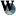

Winterwing
Me
Intro
Hello. I, as might have been guessed, am Winterwing. I have a lot of interest in wikis, and lately in UnrealScript. I am an advocate of [gender-neutral pronouns] for reasons disclosed in way too much detail on my [personal site].
About
Strange creature, I; known to few and well to none; [mythical], [paranoid], [eccentric], [existent]...
...But mainly just bored.
Interests
Technical
- UScript
- Computer hardware
- Electronics
- Portable computing
- Console emulation
General
- Coding
- Graphic design
- Doing things of substantial marketable potential in a non-marketable way
- Redundancy (see above)
- Weird spirituality
- Pointy people
UScript
Mods - UT
- PopDamage, a silly mutator. Available on my mod site. More info: /Projects.
Subpages
Links
Related
[Winterwing's stylishly minimalist mod site]
Devblog
12 April 2004:
Apparently I've been kind of gone for a while. I took a break from coding to handle some personal things, and now I'm back into mutating. I think I'll rewrite PopDamage to implement the display system I came up with while trying to port it to U2XMP. And maybe I'll find out how to get things to replicate in XMP as well. Xx
Guestbook
EntropicLqd: Hello, welcome to the Wiki. Enjoy your stay here.
Winterwing: Thanks. ^^ Awesome site. I'll eventually fill this page out a bit.
Tarquin: Hi and welcome. You might want to link to  Gender-neutral pronoun too 
Winterwing: Oo, neat. I didn't think of looking on Wikipedia. I'll see how I feel about filling out a few more details whenever I wake up. Hmmm... this is kind of like a tagboard except much less coding on my part. XD
Winterwing: I woke up.